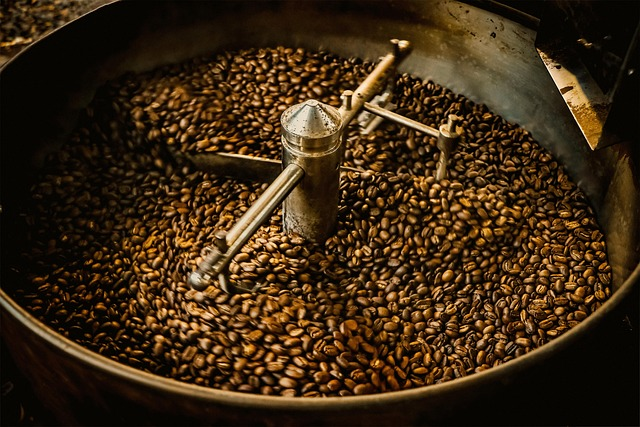
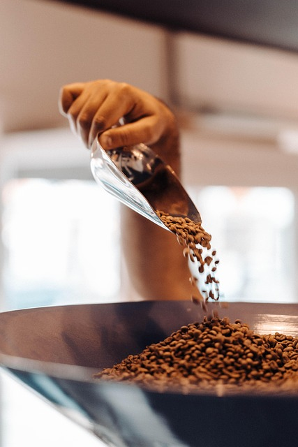
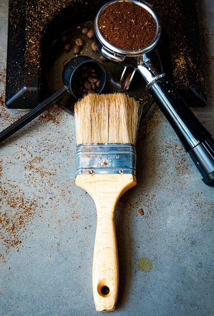
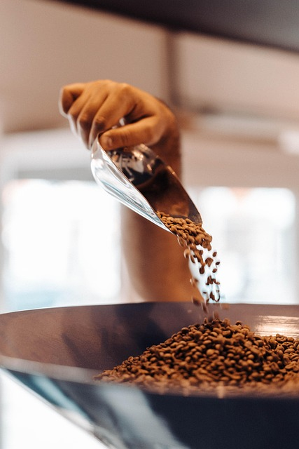
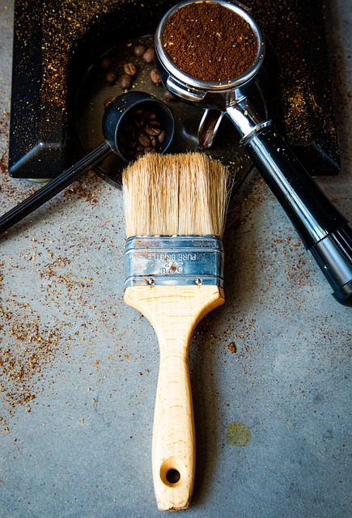

Nos Cafés

Éthiopie — Arômes floraux
Un café d’altitude aux notes subtiles de jasmin et de bergamote. Idéal pour un expresso doux et parfumé.
Colombie — Équilibré et fruité
Un café aux saveurs rondes et équilibrées, relevé de notes de caramel et de fruits rouges.

Brésil — Douceur et caractère
Une tasse suave aux arômes de chocolat noir et de noisette, parfaite pour les amateurs de café corsé.


 


